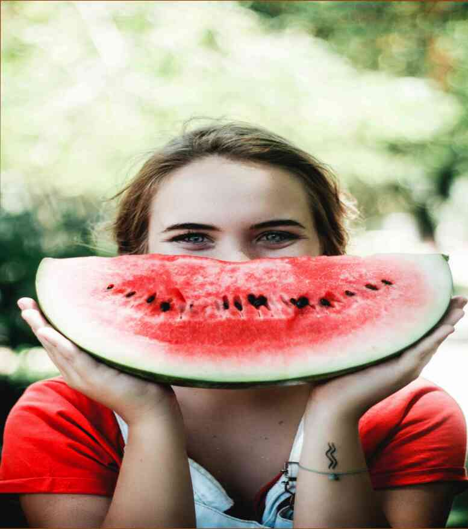

7 consejos para perder peso que realmente funcionan Lucha contra el exceso de peso es difícil. No importa cuántas calorías quemamos, o cuántas tazas de café que bebemos, o cuántas calorías nos quite del cuerpo, pérdida de peso sigue siendo difícil de alcanzar.Pocas personas tienen la fuerza de voluntad o disciplina para mantener su peso después de la pérdida de peso. ¿Cuáles son las puntas del iceberg? Elegir los consejos más eficaces para ayudarle a alcanzar sus metas.Consejo 1.Mantener una mente abierta.Centrarse en el momento presente. No te preocupes acerca de lo que va a suceder si usted hace ejercicio en 10 años. No piense acerca de por qué usted debe hacer ejercicio o perder peso. No tengas miedo a dar un paseo, hacer lo que le da placer, y luego pensar acerca de por qué es necesario. Comer más frutos secos, beber más agua, hacer yoga, diferentes clases de aeróbic. Mantener el cuerpo en un estado de alta aptitud física.Consejo 2.Es importante comer el Desayuno. Este es un Desayuno que le da la oportunidad de comer y contiene importantes nutrientes. Además, es bueno tener una variedad de alimentos en su plato, que son altos en proteína, carbohidratos, grasas, vitaminas y minerales. Agua, frutas, productos lácteos, cereales, legumbres, frutos secos, leche, huevos, pescado, brócoli, nueces, aceite de oliva, canela son bueno. No se olvide sobre el agua. Debe ser por lo menos una hora antes de su entrenamiento. Consejo 3.Si usted está luchando con el trastorno dismórfico corporal, comience el día con un buen Desayuno. De esta manera, usted no tendrá mañana la depresión y no preocuparse por las apariencias. Su cuerpo va a estar en buena forma, y usted no será capaz de imaginar la vida sin el agua en General. Recuerde, es muy importante comer el Desayuno, pero después de las 20: 00 se vuelve muy difícil. El agua es el principal "poder" de la naturaleza. Se le permite sobrevivir hasta la siguiente comida. También recuerde que es necesario comer el Desayuno, pero no al mismo tiempo. Usted no puede comer "lo que viene", sino también "antes" de la sesión de entrenamiento. Recuerde, es muy importante que los músculos están involucrados y rendir al más alto nivel. De lo contrario, el resultado no será la pena.Importante!Es necesario consumir los productos de proteína en la moderación.Es muy importante comer proteínas, pero no tanto que se sobrecarguen el sistema digestivo y dar lugar a una violación de la balanza de enzimas digestivas. Es necesario comer proteínas en cantidades razonables.Para la pérdida de peso en la primera mitad del día, es importante para establecer una relación. Para ejemplo, de 1 a 2 cucharadas de cocido de carne roja o pescado proporciona aproximadamente el 1-2% de la ingesta de proteínas durante el día. Es importante beber un vaso de agua entre las comidas. Esto ayudará a "equilibrar" el estómago.Al día siguiente, el apetito es nuevamente expulsado a 1-2 cucharadas de proteína de los productos, pero no tanto que te hace daño.
7 consejos para perder peso que realmente funcionan
